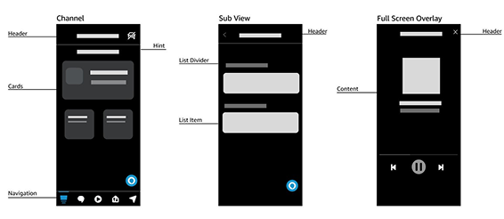
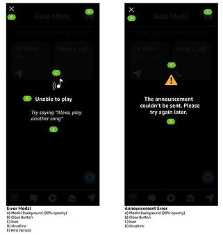
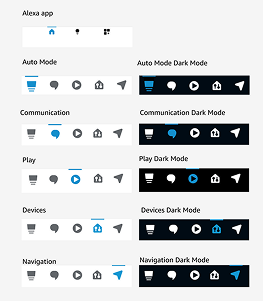

Alexa's Automotive Mode provides drivers with a hands-free in-car experience. Due to team transitions, the mode's design files had become outdated and uneditable — leaving the team without a reliable source of truth.
During this project, I recreated the Alexa Auto Mode mobile interface to produce an updated and fully editable design file for the Alexa team.
To ensure consistency with Amazon's design standards, I used the Alexa Design repository, incorporating official color palettes, typography, and iconography into the recreated designs.

I reconstructed each screen of the Auto Mode experience in Figma, organizing components, icons, and color palettes into editable pages.


One challenge was recreating complex prototyping interactions while maintaining fidelity with the live app experience.
A complete Figma design file for Alexa Auto Mode.
Reusable icons, colors, and organized design assets.
A fully interactive prototype demonstrating the flow.
The Alexa team now has access to a structured and up-to-date design file.
This project strengthened my ability to work within an established design system while accurately translating a live product into organized and accessible design documentation.